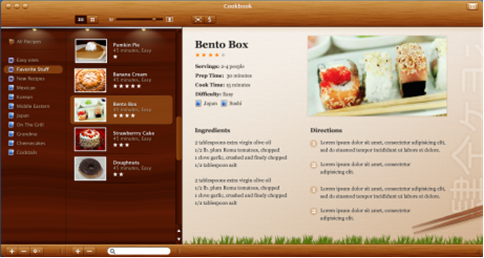
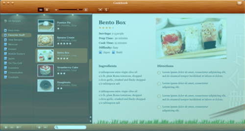
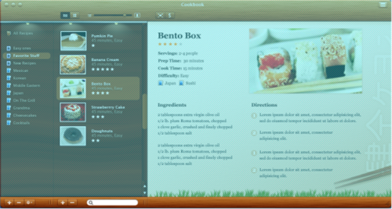
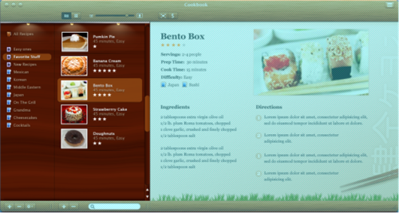
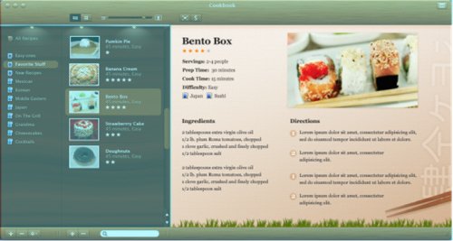
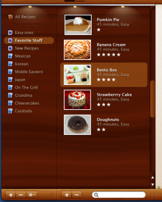

The first step in implementing a specific UI in Substance is identifying the application decoration areas. Here is a thumbnail of the main Cookbook design:
This screen has four main decoration areas. The following screenshots show a translucent light blue overlay to highlight each one of the areas.
The top portion of the application window is the header:
The bottom portion of the application window is the footer:
The left portion of the application window is the sidebar:
The center-right portion of the application window is the main:
Unlike the decoration areas that are primarily delineated by similar colors and textures, the functional areas are delineated primarily by the user-facing business logic. In Cookbook UI there are three main functional areas (in addition to the general control area in the header):

Note how the functional areas and decoration areas are not identical. In fact, every functional area intersects two decoration areas (and vice versa in most cases). Here is the sidebar area in Cookbook UI:
Note that while the lists and footers have different visuals (colors, textures, gradients), they belong to the same functional group. For example, the footer controls for the category list are located directly beneath it, and the footer panel itself has the same width as the category list. This is especially true for dynamic scenarios when the entire UI is resized or re-proportioned.
This step may cross the line between the pure design and the implementation (Swing or other UI toolkits). As the developer, you will mostly be operating on the functional UI areas. It is important to understand that Substance supports the notion of different decoration and functional areas. However, in some cases the certain limitations of the Substance decoration layer will impose some restrictions on the way you structure the Swing hierarchy.